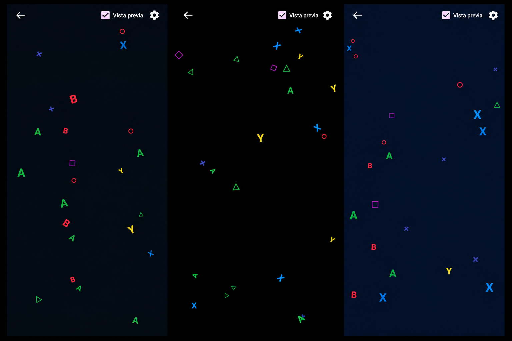
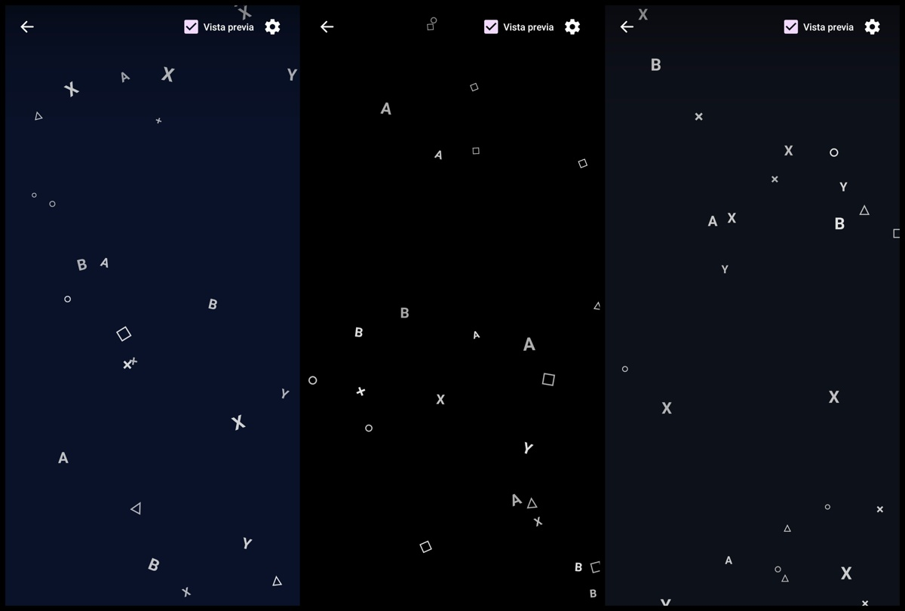

Lleva la física reactiva y partículas fluidas de esta web directamente a tu pantalla Android. Personaliza tu teléfono o tablet con 6 estilos visuales exclusivos —desde gamer y estética matrix hasta runas y kanjis— con paletas de color a medida y un consumo de batería prácticamente nulo.

Elige entre múltiples variantes estéticas. Cada una cuenta con símbolos exclusivos y paletas diseñadas para cualquier tipo de pantalla.
Los clásicos símbolos flotando con sus colores icónicos retro sobre fondos oscuros personalizables.

Estilo monocromático limpio y elegante en escala de grises y plata, diseñado para fondos negros puros y máximo ahorro de energía.
Partículas cósmicas con estrellas, destellos y polvo estelar brillante flotando suavemente sobre el espacio profundo.
Inspirado en la lluvia digital y la programación, con números binarios, llaves de código, lambdas y operadores lógicos flotantes.
Antiguas runas nórdicas y símbolos arcanos ancestrales que flotan con un halo místico y legendario.
Kanjis de las virtudes del código Bushido y honor samurái flotando con resplandor en tonos rojos sobre fondos oscuros.
A diferencia de otros fondos animados pesados, Conceptual Live Wallpaper fue desarrollado con optimización gráfica nativa y bajo uso de memoria.
La misma física reactiva y partículas suaves que estás viendo en el fondo de este sitio web.
Optimizado con pausas automáticas cuando la pantalla se apaga o abres otras aplicaciones.
Personaliza la velocidad, estilos de partículas, tonos de fondo y colores.
Sin suscripciones ni publicidad invasiva.